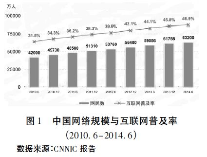
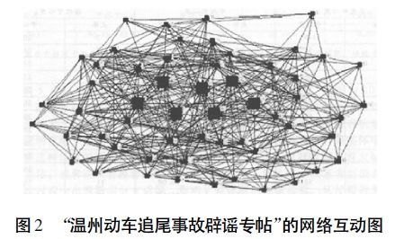

收录于合集
简
汪 波
北京师范大学政府管理学院教授，行政管理系系主任，北京大学博士，哈佛大学访问学者。
摘 要
大数据时代背景下民意形态悄然发生了三重变迁:民意结构由原子化转化合成化; 民意测量由样本民意转向总体民意; 民意分析由小数据分析转向大数据分析与可视化。大数据时代背景下，数字协商民主已成为中西制度生命力的竞争高地。基于SWOT 分析法的SO策略、WO 策略、ST策略、WT策略构成大数据背景下中国特色协商民主发展的四元发展策略。
关键词
大数据 民意形态变迁 数字协商民主
SWOT策略
研究背景: 时代变迁、 研究问题与理论探讨
冷战结束后，弗朗西斯·福山在《历史的终结》一书中将西方自由民主制度视为“历史的终结”，但面对当代美国政治失灵，他在新著《政治秩序和政治衰败》中重新思考政治衰败与历史发展。20世纪末，约瑟夫·毕塞特、哈贝马斯与罗尔斯将研究焦点转向“协商民主”( Deliberative Democracy)。哈贝马斯提出了第三种民主模式: 建立在交往行动理论之上的商议政治。但在民主实践过程中，西方协商民主既缺乏直接民主的技术条件，也缺乏协商成本的支付能力，只能成为竞选民主的配角。而大数据信息网络与协商民主的碰撞，为协商民主的发展提供了新的驱动力。
互联网时代把人类社会带入了 以“PB”( 1024TB) 为单位的大数据时代。电子商务、社交网络、微博、微信、移动通信、视频网站不停息地产生亿计数据。网络大数据获取、储存、搜索、共享、 分析，挖掘、云计算、可视化呈现开启了一次重大时代转型，大数据信息风暴正变革人类社会生活方式、思维方式、民主治理方式。大数据成为21 世纪人类探索的新边疆，英国学者维克托·迈尔·舍恩伯格( Viktor Mayer Schnberger)在《大数据时代》书中指出: “大数据开启了一次重大时代转型。就像望远镜让我们能够感受宇宙，显微镜让我们能够观测微生物一样，大数据正在改变我们的生活以及理解世界的方式，成为新发明和新服务的源泉，而更多的改变正蓄势待发……” 哈佛大学社会学教授加里·金认为: 大数据是一场革命，庞大数据资源使得各领域开始了量化进程，学术界、经济界与政府治理所有领域都将开始这种进程。“数据浪潮，汹涌来袭，与互联网的发明一样，这绝不仅仅是信息技术领域的革命，更是在全球范围启动透明政府、加速企业创新、引领社会变革的利器”。
在大数据网络时代，民意不再是一种抽象的哲学概念，民意形态如何发生着变迁? 这种变迁又如何进一步驱动着协商民主发展?这两个问题构成本文探索的核心问题。从海外研究来看，在信息网络背景下，数字民主( digitaldemocracy)、电子民主( e－democracy) 、赛博民主( cyber－democracy)一系列新民主概念纷纷产生。相关研究成果包括尼葛洛庞帝《数字化生存》、内尔·巴雷特( Neil Barrett)《因特网的文化、政治和经济》、罗斯克兰斯( Ｒose- crance) 的《虚拟国家的崛起》、美国学者凯文·希 尔( Kevin Hill) 《网络政治学》、桑斯坦( Cass Sun- stein) 的《网络共和国》、William H． Dutton的《网络 社会: 数字化时代的信息政治学》、理查德·戴维斯 ( Ｒichard Davis) 的《互联网对美国政治系统的影 响》、安德鲁·查德威克的《互联网政治学: 国家、公 民与新传播技术》。Ann Macintosh 提出网络民主 参与的十个核心维度，并把网络民主参与水平分为三个级别: 网络赋能( E－enabling) ，网络卷入( E－ engaging) 以及网络赋权( E－empowering) 。这些理 论与观点存在一定借鉴价值，但是，中国协商民主 基于中国国情，存在着自身独特的发展逻辑。随着 民意形态变迁，大数据网络背景下中国协商民主面临着新的挑战与机遇。
大数据时代民意形态三重变迁
在大数据时代，民意形态悄然发生着三重变迁: 民意结构由原子化转化合成化; 民意测量由样本民意转向总体化民意; 民意分析由传统分析转向大数据分析与可视化。
（一）大数据时代民意结构: 原子化转向合成化
在人类历史发展的长河中，微观个体与宏大历史是什么关系? 恩格斯曾言: “历史是这样创造的:最终结果总是从许多单个意志的相互冲突中产生出来，而其中每一个意志，又是由于许多特殊的生活条件，才成为它成为的那样。这样就有无数互相交错的力量，有无数个力的平行四边形， 由此就产生出一个合力，即历史结果，而这个结果又可以看作一个作为整体的、不自觉地起着作用的力量的产物。…… 每个意志都对合力有所贡献。”每个个体的独特历史价值构成协商民主最基本的理论渊源。正是基于协商民主的纽带，微观个体得以平等地融入到政治生活与政府治理流程。一个个细微的利益诉求、一个个似乎并不那么正确的声音、一次次意志表达，通过协商民主场域无时无刻的讨论、互动、妥协、综合化，输出为民主化的政治选择与科学化的公共政策。
工业时代的民主协商似乎更像是一种零售模式，原子化的分散个体直接面对庞大的权力机器， 并等待着权力有选择的抽取而进入协商场域。随着大数据时代的到来，大数据网络悄然赋予普罗大众一种特殊的“解构”工具，原子化个体可以低成本甚至零成本联合起来，发出日益响亮的声音， 并名正言顺( 基于人民主权) 地向人民公仆“团购政策”，国家治理的权力垄断正走向终结。
大数据网络形成人类新的分水岭，农业文明的分散化与工业文明的集中化在大数据中融为一体。 大数据往往被定义为4个V:数量( Volume)、形态 ( Variety) 、价值( Value) 、速度( Velocity)。在大数据网络，微博、论坛、社区、跟帖、QQ 等 web 技术普遍应用，4G 手机等新终端的广泛普及，使网民能迅捷上传、转载信息，实现跨时空、跨区域、跨行业的信息交融，“从社会研究视角来看，大数据是痕迹数据汇集的并行化、在线化、生活化、社会化。数据汇集的并行化是指同时运行很多个线程。在线化，就是数据本身在线上，不在你的桌面计算机或移动硬盘中。社会化，指每个人都有可能是数据的提供者。简单地说，大数据就是形态数字化、非结构化、 在线流动着的数据”。
大数据技术正成为数字协商民主的润滑剂与加速器。“人民当家作主”的宏大理论正借助大数据信息流，使无数个体的细微话语嵌入国家治理流程各环节，“民有”的人民主权理想正踏踏实实地着陆为民治的实践。在大数据网络平台上， 个体不再以分散化方式进行微弱的话语表达，而是借助于网络工具，将微弱的话语表达转化为大数据的数据形式，并通过网络自处理甚至云计算， 汇聚成为响亮的民意，并融入权力流程的所有环节: 权力产生、权力行使、权力规则、规则实施。
（二）大数据时代民意测量: 样本民意转向总体民意
如何获取民意? 小数据时代采取抽样方式， 以最少数据获得最多民意信息。基于小数据调查的量化统计分析方法曾具有数据调查与数据分析的显著优势。但是，“样本数据是按照特定研究目的、依据抽样方案获得的格式化的数据，不仅数 据量有限，而且如果过程偏离方案，数据就不能满足要求。基于样本数据所进行的分析，常无法满足多层次、多角度的需要。若遇到抽样方案事先未曾考虑到的问题，数据的不可扩充性缺点就暴露无疑。”
在大数据时代，调查数据的优势逐渐丧失，因为大数据分析不再满足于基于抽样的民意调查， “……在大数据时代进行抽样分析就像在汽车时代骑马一样。一切都改变了。大数据时代，样本=总体”。相比于小样本数据，大数据具有巨大的数据选择空间，可以进行多维度多视角数据分析。 大数据由于覆盖小样本数据难以捕捉的诸多民意信息，从而可以体现小样本所不足以呈现的特定民意。
大数据是信息网络技术所记录和量化的数据，并能更为真实地体现民意，因为它不是来源于 数据收集，而是忠实于数据记录，这种记录主要存 在三种记录来源: 互联网、社交网络( 微信、Face- book、Twitter) 、传感器( 手机、手环、街道探头) 。 大数据时代民意调查不再向调查对象去搜集数 据，而是从大数据中获取数据。哈佛大学的G． King 教授在2013 年运用网络爬虫从1382 个社交 媒体网上获取数据，研究中国网民意志的表达。 大数据不是抽象存在，每一个数据后隐藏着真实的公民主体，体现着一个个真实而独特的利益诉 求，大数据的自动记录将碎片化的民意信息综合 化，形成系统、综合性、动态、可视化的整体民意信 息，从而为更民主更科学的决策奠定了更为坚实 的民意基础。
( 三）大数据时代民意分析: 小数据分析转向大数据分析与可视化
在大数据时代，小数据的分析数据优势也在逐渐失去。大数据是痕迹数据汇集的并行化、在线化、生活化和社会化，基于整体样本 展开云分析。“模型不再重要，当年统计学最得意的回归预测方法将被淘汰。”“如果社会学不能掌握大数据运用的知识与能力，没有超过其他学科的想象力和建模能力，基本上，社会学学者将完全沦落为各类组织的劳工。” 小数据量化分析需要改变认识数据的思维、收集数据的思维和分析数据的思维。
大数据时代的民意不再是空洞的哲学概念， 而是通过一系列测量技术来获取民意大数据，并通过云计算，使民意大数据趋于指数化与可视化。 大数据时代的民意不再满足于基于抽样的民意调查，大数据时代基于总体样本，将碎片化民意信息整合起来，形成系统而动态的整体民意信息，并且进一步利用网络图形学技术，多维图形显示方法， 用来描述大数据及其相应民意变迁。我国国内主流网络媒体已通过指数分析、可视化对民意大数据进行数据挖掘。从大数据时代民意指数化与可视化来看，主要包括四种类型: (1)搜索民意指数。代表指数为百度指数，百度指数以百度海量网民行为数据为基础，是当前互联网大数据时代最重要的大数据分析平台之一。百度指数的主要功能模块包括: 基于单个词的趋势研究、需求图谱、舆情管家、人群画像; 基于行业的整体趋势、地域分布、人群属性、搜索时间特征。( 2)微博指数。代表指数为新浪微指数。微指数是通过关键词的热议度，以及行业/类别的平均影响力，来反映微博舆情的发展走势。微指数分为热词指数和影响力指数两大模块，影响力指数包括政务指数、 媒体指数、网站指数、名人指数四块。( 3) 社区论坛的民意指数。代表指数为天涯指数，天涯指数关注国内社会民生话题、反映社会动态、参与社会治理、社会舆情应对。( 4) 权威媒体发布的指数。 以人民网舆情监测室发布的政务指数为代表。 “政务指数排行榜( 双微排行) ”基于传播力、互动力、服务力三大指标考评“政务双微机构”的综合影响力。这四种类型指数分析工具形成基于大样本的大数据挖掘，将碎片化民意信息整合为综合性、动态、可视化的民意信息。
当人类社会开始迈入大数据时代，民意形态也经历着深刻变迁，中国特色的协商民主形态应相应变革，以适应民意形态变迁。大数据时代协商民主应具备三种核心能力。第一种能力: 整合大数据的能力。即通过数据挖掘、指数分析、可视化，探索与分析大数据背后的总体民意。“大数据发展的核心动力来源于人类测量、记录和分析世界的渴望。但是信息技术变革的重点在T(技术) 上，而不是在I(信息) 上。现在，是时候把聚光灯打向I，开始关注信息本身了。”第二种能力:权力体制与大数据的融合能力。大数据并不是一个充斥着算法和机器的冰冷世界，大数据只有与民主治理体制相融合，才能解决公共问题，提升社会总体福利。第三种能力:基于大数据民意， 通过数字协商，提升制定科学公共政策的能力，以及精确快速执行政策的能力。如何实现这些能力? 基于 SWOT优劣势分析法的策略分析为大数据背景下数字协商民主分析提供了一种有益的分析视角。
SWOT 视角下中国数字协商民主发展:路径与策略
SWOT优劣势分析法是一种竞争态势的综合分析方法，以评价主体所具有的优势(Strengths)、 劣势 ( Weaknesses ) 、机 会 ( Opportunities ) 、威胁 ( Threats)。该方法可运用于中国数字协商民主发展的路径与策略分析。协商民主是中国民主政治的传统优势，但其不足在于协商民主体系相对封闭。大数据网络既对中国协商民主构成挑战， 又提供了新的发展机会。在SWOT分析法视野下，中国协商民主发展策略包括四种路径: SO策略、WO 策略、ST 策略、WT 策略。
（一） SO 策略:中国协商民主的网络化
中国之所以能在 30多年改革开放进程中既创造了经济繁荣，又保持了总体政治稳定，重要原因在于中国特色协商民主有效发挥了“民意吸纳与政治协商”的功能。协商民主构成中国民主政治的中轴与优势，SO 策略是基于机会( Opportuni- ties) 与优势( Strengths)的发展策略。大数据网络为中国协商民主的发展提供新的机会: 即基于中国协商民主的传统优势，运用大数据网络工具，推进更有效的协商民主。
大数据时代潮流与中国协商民主在信息时空背景下的碰撞，构成两者间的功能耦合: 网络大数据革命不仅为更大范畴的协商民主提供了技术平台，而且通过一系列网络技术手段使协商成本大幅降低，这使理论层面的协商民主理论逐步趋向于操作运用层面。互联网凭借海量信息、跨越时空、互动性强、传播迅速等优势，正成为最具影响的新兴舆论工具。截至2014年6月，我国网民规模达6.32亿。互联网普及率为46.9%。伴随着虚拟公共空间兴起，网民不仅通过微博、BBS、QQ、 论坛、博客进行沟通、交流和表达，而且逐渐形成网络虚拟草根组织，并能在一定情势下聚合，展开或正面或负面的集体行动。

“在网络与信息时代制度环境下，任何一种 制度发展路径都无法形成绝对优势，无法维持垄 断制度收益，这就促使制度变迁主体必须保持对 环境变化的敏感性和快速反应机制，从而形成多元、持续、渐进的制度变迁。” 网络大时空背景下 我国协商民主应由线下民主逐渐转向线上民主与 线下民主的双层互动，通过多层次多领域网络协 商，促进公权力与网络民意在虚拟空间的对流与 动态均衡。数字协商民主通过自上而下和自下而 上的意志对流过程实现国家意志统合，“领导层 广泛吸纳民众意见，制定整体纲要，并动态调整， 这样便创造了纵向结构，各种利益诉求可源源不断沿着这个纵轴进行对流。”瑏瑡 数字协商民主构成 群众路线的在线版，政府根据网络主体政治参与 需求强度，将网络主体吸纳到公正而富有理性的 程序之中进行有效对话、沟通、协商，通过多层次、 多渠道、多类型网络协商，促进权力与公民政治参 与之间的动态均衡。在利益多元化的信息时代， 数字协商民主能够构成政府—市场—社会—网络 之间的缓冲器，使多元冲突的利益诉求在协商民 主的缓冲带中相互冲击、交互、调整、改变，最终输 出包容性的整体公共意志。
（二）WO 策略:公共政策议程重塑
WO 策略是基于机会(Opportunities)与劣势(Weaknesses) 的策略。大数据为公共政策议程重构提供了重塑机会。工业时代政策议程建构围绕着权力而展开。尽管政策议程存在着不同程度的民主协商因素，但是，民主协商主要作为辅助与补充，在权力有选择的组织下有限展开。权力为核心的政策垄断构成了工业时代政策议程建构的主导形态。在此形态下，一些最核心的政策行动者组成了集中而相对封闭的体系，马什和罗兹将该体系称为政策共同体。政策共同体构成了工业时代政策垄断的组织基础和资源基础，那些拥有政治、经济资源的共同体核心主体，由于具有丰富的资源与话语权，相当程度上垄断着政策议程。
随着大数据网络的崛起，传统政策议程受到大数据信息流的挑战。政策共同体与政策垄断的稳定结构在大数据时代逐渐趋于解构。大数据信息流赋予了大众一种有效的话语表达与民意积聚的工具，大数据分析将碎片化民意信息整合为指数化与可视化的整体民意。无数原子化个体可低成本联合起来，在人民主权的名义下团购公共政策，从而迫使传统政策议程垄断走向开放，公民借助大数据信息流将自已的话语嵌入于公共政策流程。
在大数据信息流的冲击下，中国公共政策议程正由传统政府部门议程设置扩展为全方位议程设置:政府部门议程、网络议程、媒体议程构成三元互动的政策议程体系，其中，网络政策议程设置日益显著。三种政策议程呈现双向交互影响，政府—网络议程、政府—公众议程、政府—媒体议程、媒体—大众议程形成相互嵌入的混合议程。 当前，微博正重塑政策议程创建流程，逐渐成为政策议程民主化的“微动力”。以新浪认证的政务微博为例，政务微博数量在 2009 年的 10个微博发展到 145016 个政务微博( 2015 年 6 月) ，其中政务机构官方微博108115个，公务人员微博36901个。政务微博呈现集群化发展特点，形成覆盖不同级别、不同职能部门的政务 微博矩阵。 随着政务微博快速生长与扩展，政务微博群体的功能逐渐由信息发布型转向服务型、问政型、互动型，政务微博成为“互联网+政务”治理的重要载体。微博既是公民参政议政的网络工具，也是政府实行网络决策吸纳的宝贵资源。政务微博网络平台为政策议程创建提供了有效咨询工具。政府决策部门在进行政策可行性论证时，可运用网络工具，释 放“决 策气球”，试探与听取舆 情民意。 在北京地铁涨价等政策案例中，决策部门通过网络释放决策气球，收集网络舆情与民意，尽可能将决策匡正于民意范围。
在网络信息流与政策流的对流中，政府部门 将传统政策制定的“谋”与“断”一步到位的模式， 转变为“谋”与“断”不断反复，从而形成政府信息 流与网络信息流的交互。网络公共空间融合了各 领域、各阶层、各群体的各种主体，网络政策议程 创建过程中的集思广益，各抒己见，能有效避免信息有限而导致的政策方案局限性，“或许他们中 的每一个都没有找到很合理的解决办法，或者说 由于他们各自关注点的局限性，他们根本就不可能提出一个统筹兼顾、为各方所接受的方案，但是他们的‘合力’能够使得最后出台的政策正如数 学中的‘极限’运算一样，是无限地趋向于合 理。”瑏瑢 公共决策议程的网络吸纳与数字协商，使 网民能参与政策议程的创建、政策方案选择、政策 执行，从而化解潜在冲突，强化公共政策合法性。 由于网民在政策议程创建中表达自我话语，在方案选择过程中融入自身意志，因此更倾向于认可公共政策价值，从而为公共政策有效执行创造良 好生态环境。
( 三) ST 策略:融媒体构成国家意志与网络意志的对流平台
ST 策略是基于优势( Strengths ) 与威胁 ( Threats) 的发展策略。大数据网络是柄双刃剑， 既为网民提供理性协商的虚拟公共场域，也时常 形成非理性协商，“数字化世界既可以释放出难 以形容的生产能量，也可能成为恐怖主义者和江 湖巨骗的工具，或是弥天大谎和恶意中伤大本 营。”瑏瑣 在网络空间话语协商形成过程中，意见弱 势一方可能进入“沉默的螺旋”瑏瑤 ，强势一方则不 断增势，通过信息流循环往复，形成与强化“群体 极化”( group polarization) 效应。面对着大数据信 息流所存在的非理性威胁，融媒体构成国家意志 与网络意志的信息对流、引导与纠偏的平台。互 联网颠覆了传统舆论传播方式，实现了跨时空、跨 区域、跨行业的信息交融，“因特网把所有人都变 成了出版发行人。这是革命性的转变。”大数据网络的海量信息使网民容易迷失导向，主流融媒 体则成为大数据信息流的导航仪，为受众提供权威而可信赖的信息引导。
“融媒体”正成为数字协商民主的新型信息平台。融媒体将广播、电视、报纸、网络等媒体全 面整合，实现资源通融、内容兼融、宣传互融、利益共融，从而构成网络时代背景下国家意志与网络意志的对流交互平台，为民主协商奠定良性舆论场域。以光明日报为例，光明日报在打造新型主流媒体的进程中，创建了新型媒体系统，这一系统包含网站( 光明网) 、移动互联网产品( 手机光明网、光明日报手机新闻客户端、光明日报手机报、 云端读报、光明云媒) 、社交媒体平台( 微信、光明日报官方微博) 、楼宇信息屏，从而形成多载体、多层次的传播报道平台体系。系统内各要素互相策应、互相借力，最终形成传播合力。
在“融媒体”的中介作用下，国家与虚拟社会之间的信息流得以贯通，形成国家—主流媒体—融媒体—新媒体—网民的对流通道，这使主流媒体与新媒体摆脱了对立关系，形成了互依共存的矛盾共同体。在“融媒体”视野下，主流媒体和互联网可通过“打时间差”、“打空间差”方式来实现媒介互动， 通过不同视角、不同态度的异质之间交流、碰撞，让网民通过自我探讨，逐步形成综合系统的认知，以实现更有效的舆论引导，从而为更高层面的频繁交互的数字协商民主奠定了良性舆论场域。
( 四）WT 策略: 国家—网络意见领袖之信息
在虚拟公共场域具有较强的“话语权”与“集体组织能力”，对政府决策从不同角度进行批判，对不规范政府行为进行曝光，从而使政府治理面临着失范压力。
意见领袖居于虚拟社会网络中心，直接或间接地与各节点( 网民) 连接，展开频繁信息沟通与传递。网络中心性构成意见领袖的社会网络资本，围绕于中心的各节点构成网络意见领袖的社会网络资本与信息资本。居于中心位置的意见领袖因而获取并拥有第二种权力。有学者建构了“7·23 温州动车追尾事故辟谣专帖，所有谣言都是纸老虎”的网络互动社区图，以分析网络意见领袖的议题设置权力( 参见图2 ) 。由图可见，参与讨论各主体在互动过程中形成了以特定结点为中心的凝聚群体，而舆论领袖对议题议程设置的权力最大。研究表明: “由于所拥有的社会资本不同，参与讨论各主体对议题进行议程设置的能力显出层级分化; 在参与主体的同质性交往和感染过程中，逐渐产生小群体; 每个小群体的信息流入流出都围绕该群体的中心点进行，这些点的中心性指标最高，占据这些中心点的主体即讨论的舆论领袖”。

如何处理政府与网络意见领袖间关系? 成为网络时代治理现代化日益重要的现实问题。尽管政府掌握着第一种权力: 基于官僚制组织的强制性力量，但在网络信息传播中，却不天然拥有第二种权力:虚拟社会网络权力。网络意见领袖掌握着相对丰富的网络话语资本，从而很大程度占有并分享第二种权力。社会网络的信息集聚过程自然形成舆论领袖与普通网民的中心—边缘结构， 从而形成社会网络权力分配的梯次划分。如果网络意见领袖运用社会网络权力，与政府体制形成对峙甚至对抗，政府管理面临着强大外部压力与治理阻滞。
信息社会与大数据时代背景下，数字协商民主是一种有限而宝贵的资源，数字协商民主资源不能同量同质的平均分配，而应与网络凝聚群相适应，重点对网络意见领袖进行网络吸纳，在国家—意见领袖间建构直接信息对流通道，并通过网络意见领袖为中心的社会网络向各节点传播， 从而以最低成本实现数字协商民主，使多样化网络诉求通过有秩序管道得以表达，从而缓和“政府—虚拟社会”之间异质对抗，保持现行体制稳定性、包容性和民主性。2014 年习近平在京主持召开文艺工作座谈会中，花千芳和周小平作为“网络作家”代表首次进入国家层面民主协商，这释放出一个重要政治信号: 中国协商民主正由线下民主转向在线协商民主与线下民主的双层互动。上海在基层社会治理过程中展开数字协商民主的新探索:将社区管理与人气旺盛的社区论坛相结合，推行“双版主、双进入”模式，即，网络版主通过培训进入现实社区与社区干部和群众沟通交流，配合政府部门工作; 社区干部通过培训进入论坛，与原版主合作，成为共同版主，共建共管网上家园。政府通过发挥舆论意见领袖的“羊群效应”与中介传导效应，实现政府与虚拟社会网络的无缝对接。
结语
在人类制度变迁过程中，民主形态始终与社会形态相匹配。阿尔文·托夫勒将社会发展图式归纳为:农业社会第一次浪潮、工业社会第二次浪潮、信息社会第三次浪潮的起伏推进。随着大数据信息时代的到来，民意形态悄然发生了三重变迁:民意结构由原子化转化合成化，民意测量由样本民意转向总体民意，民意分析由小数据分析转向大数据分析与可视化。大数据时代背景下，数字协商民主已成为中西制度生命力的竞争高地。 但是，“不同于印刷革命，我们没有几个世纪的时间去适应，我们也许只有几年时间”。瑏瑩 大数据网络时空背景下的中西政治制度生命力的竞争中， 政府只有对网络环境保持敏感与快速反应机制不断进行制度变革与创新，才能抓住历史所赋予的协商民主创新机遇。
大数据网络时空背景下，我国协商民主应由传统协商民主逐渐扩展为线下协商民主与线上协商民主的双元互动。基于虚拟网络资本的网络精英协商、网络问政与公共政策议程的开放化、作为国家意志与网络意志对流平台的融媒体构成更为开放的数字协商民主体系，使得信息时代多元化利益诉求在协商民主的缓冲带中相互交互、冲击、调整、 改变，最终输出包容性的、和谐化的公共意志。
文章来源： 《浙江社会科学》 2015 年第 11 期
编辑：里仝
学人约稿与入群邀请